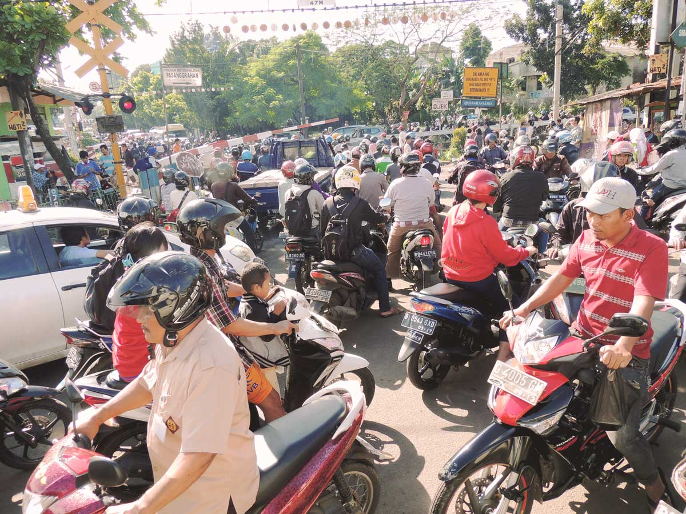

The Angkots of Solo: Informal public transport in a Central Javanese City
Surakarta (Solo), Central Java, Indonesia
Though the city of Solo, also known as Surakarta, has been recognized for its inclusive and progressive governance policies, over the last eight years the city government has struggled to respond to the city’s large increase in street traffic. In efforts to increase the number of passengers on government-run bus systems, Indonesian city governments like Solo have viewed informal modes of transportation, like angkot (small mini vans running between fixed points in a city) as unwanted competition and unviable transportation alternatives.
A team of researchers from Kota Kita conducted a survey of angkot riders along Solo’s nine different angkot lines by interviewing more than 900 passengers. We also interviewed each of Solo’s nine driver’s associations and carried out in-depth interviews with select drivers. We find that angkot provide an essential service that connects more difficult-to-access and poorer areas within the city, and that such informal transportation modes like angkot may offer ways to improve, rather than impede, urban mobility. We propose that instead of the current exclusionary approach of the city government, cooperation and co-management with informal service providers is not only possible but can produce benefits for both sides.
A key challenge in managing Indonesia’s cities today is how to effectively work with the informal sector, which provides jobs and essential services to tens of millions of Indonesia’s poor but is not well monitored or taxed by the government. One way in which the relationship between the government and informal sector is being tested is with the recent introduction to Solo in 2009 of a Bus Rapid Transit (BRT) system, in which buses travel in dedicated lanes.
New BRT systems in cities such as Solo are providing additional mobility options, but they are struggling to do so. They face a number of issues, such as a lack of management capacity, lack of profitability, and an over-reliance on government subsidies. Informal transport, such as angkot, ojek (motorcycle taxis) and becak (pedicabs), are generally used by the poor and service parts of cities that lack efficient formal transportation services. In efforts to increase the number of passengers on government-run bus systems, governments see informal modes of transportation as unwanted competition and a nuisance, and want them off the roads, planning on disbanding all angkot not “integrated” into a planned angkot consortium by 2017.
This consortium is part of a plan by Solo’s Department of Transportation to create a networked public transportation system relying on Solo’s BRT system as the primary service provider, even though there is little evidence in the years since its introduction to suggest that many people are switching over to it.
Angkot drivers themselves have to not responded well to the government’s plans to consolidate into a single company, with little dialogue or communication to help persuade them to soften their views. Given the continued proportional decrease in riders on public transportation overall, the current situation reflects a lost opportunity to develop a citywide integrated transportation service that works, as more people move to motorbikes or other private transportation. Given the highly integrated use of angkot with other modes of transportation by their passengers, in particular the highly available use of motorcycles, and the low volume of transfers between angkot and Solo’s BRT, it is likely if angkot service were discontinued that riders would switch to motorcycles, not the BRT.
Angkot drivers have succeeded in maintaining their livelihoods and serving their customers, primarily women and the poor, through years of institutional neglect and even mismanagement by the city government. They have done so by being highly adaptive, made iterative improvements and experimented with changes that respond to their shifting circumstances. Angkot drivers are more likely to support and participate in BRT–angkot integration if they are meaningfully engaged: they must know that their contributions and suggestions are valued and they must see demonstrable effects through their collaboration with the government.

